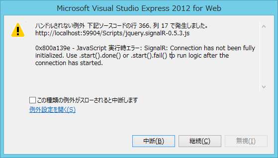
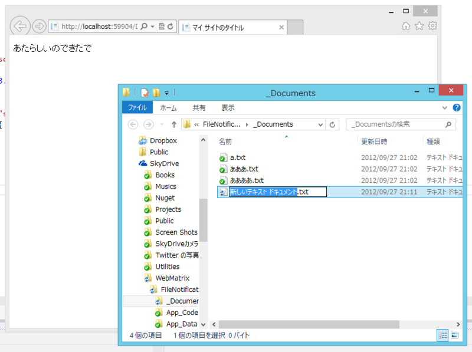

SignalR + WebMatrix でサーバーフォルダの監視を行ってみる
執筆日時：
SignalR の面白い使い方ってないかなーと思ってたのだけど、たとえば誰かがファイルをアップロードした時、同時接続している人たちにそれを知らせられたら面白くないかな？ と思いついた。さっそくやってみる。
自分の作ったサンプルコード（SignalR Deep Dive ! に参加してきた＋WebMatrix で SignalR 動かしてみた - だるろぐ）をコピペして、必要な処理を足して、要らない部分を消して……以下のようなコードを書いてみた。
# ~/App_Code/SampleHub.csusing SignalR.Hubs; using System.IO;
[HubName("sample")] public class SampleHub : Hub { public SampleHub() { var watcher = new FileSystemWatcher();
watcher.Path = System.Web.HttpContext.Current .Server.MapPath(@"~/_Documents"); watcher.Filter = "*.txt"; watcher.NotifyFilter = NotifyFilters.FileName | NotifyFilters.DirectoryName | NotifyFilters.LastWrite; watcher.IncludeSubdirectories = false; watcher.Changed += (o, s) => { Clients.Echo("なんかかわったで"); }; watcher.Created += (o, s) => { Clients.Echo("あたらしいのできたで"); }; watcher.Deleted += (o, s) => { Clients.Echo("きえてもうた……"); }; watcher.Renamed += (o, s) => { Clients.Echo("なまえかわったわ"); }; watcher.EnableRaisingEvents = true; } }
めんどくさいので フォルダ、ファイルの変更を監視する - .NET Tips (VB.NET,C#…) をほとんど丸コピしている。原理的には、これで _Documents フォルダ内のテキストファイルが更新されると、クライアント側の Echo() が呼ばれるはず。
ちなみにクライアント側はこんな感じ。
# ~/Default.cshtml <!DOCTYPE html> <html lang="ja"> <head> <meta charset="utf-8" /> <title>マイ サイトのタイトル</title> <script type="text/javascript" src="Scripts/jquery-1.6.4.js"></script> <script type="text/javascript" src="Scripts/jquery.signalR-0.5.3.js"></script> <script> var connection = $.hubConnection(); var sample = connection.createProxy("sample"); connection.start(); sample.on("Echo", function (value) { $("#value").html(value); }); </script> </head> <body> <p id="value"></p> </body> </html>
反応がない、ただの屍のようだ。
でも、これだと動かない。なぜだ！
元のサンプルコードをいじりながらいろいろ試してみたところ、クライアントから一度なんらかのアクションがあれば、期待通りの動作をするみたい。ということで、コードを少し足した。
# ~/App_Code/SampleHub.csusing SignalR.Hubs; using System.IO;
[HubName("sample")] public class SampleHub : Hub { public SampleHub() { （省略） }
public void Initialize() { // 追加：コネクションを叩き起こすための何もしないメソッド } }
で、クライアント側から SampleHub.Initialize() を叩く。
# ~/Default.cshtml <!DOCTYPE html> <html lang="ja"> <head> <meta charset="utf-8" /> <title>マイ サイトのタイトル</title> <script type="text/javascript" src="Scripts/jquery-1.6.4.js"></script> <script type="text/javascript" src="Scripts/jquery.signalR-0.5.3.js"></script> <script> var connection = $.hubConnection(); var sample = connection.createProxy("sample"); connection.start(); sample.on("Echo", function (value) { $("#value").html(value); }); sample.invoke('initialize'); // <-- 追加！ </script> </head> <body> <p id="value"></p> </body> </html>
無理やり叩いたらゲロ吐きやがった
そうしたらエラーで止まった。

connection.start() が終わってないのに SampleHub.Initialize() を叩くんじゃねえ、バカ。そういいたいらしい。connection.start().done() を使えというので、素直に従おう。
# ~/Default.cshtml<!DOCTYPE html>
<html lang="ja"> <head> <meta charset="utf-8" /> <title>マイ サイトのタイトル</title> <script type="text/javascript" src="Scripts/jquery-1.6.4.js"></script> <script type="text/javascript" src="Scripts/jquery.signalR-0.5.3.js"></script> <script> var connection = $.hubConnection(); var sample = connection.createProxy("sample"); connection.start().done(function () { // <– done()! sample.invoke(‘initialize’); }); sample.on("Echo", function (value) { $("#value").html(value); }); </script> </head> <body> <p id="value"></p> </body> </html>

ぉー！ ちゃんと動いたぞ。けれど、あんまりスマートじゃないな？ まぁ、いいか。